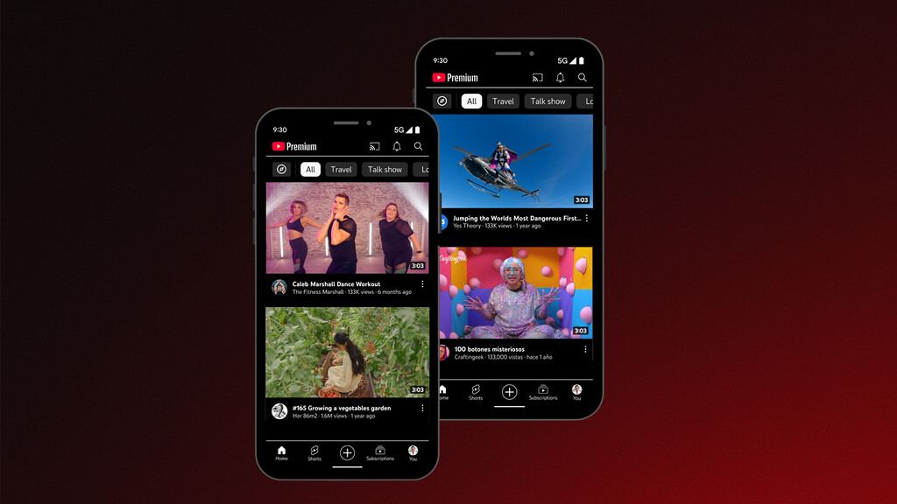

Tarife & Angebote Vodafone integriert YouTube Premium Lite ins Portfolio Vodafone Spanien bietet Kunden ab sofort die günstigere Variante YouTube Premium Lite für 8,99 Euro pro Monat an und schenkt Neukunden zwei Monate kostenlos. Alternativ können auch zwei Monate volles YouTube Premium im Wert von 15,99 Euro gewählt werden. Vodafone Group · Europa · 15. Oktober 2026Tarife & Angebote · Europa
Vodafone integriert YouTube Premium Lite ins Portfolio
Vodafone Spanien bietet Kunden ab sofort die günstigere Variante YouTube Premium Lite für 8,99 Euro pro Monat an und schenkt Neukunden zwei Monate kostenlos. Alternativ können auch zwei Monate volles YouTube Premium im Wert von 15,99 Euro gewählt werden.
Originalquelle öffnen ↗ Xataka Móvil